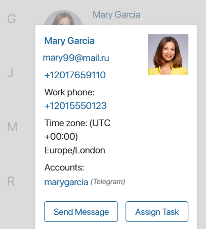
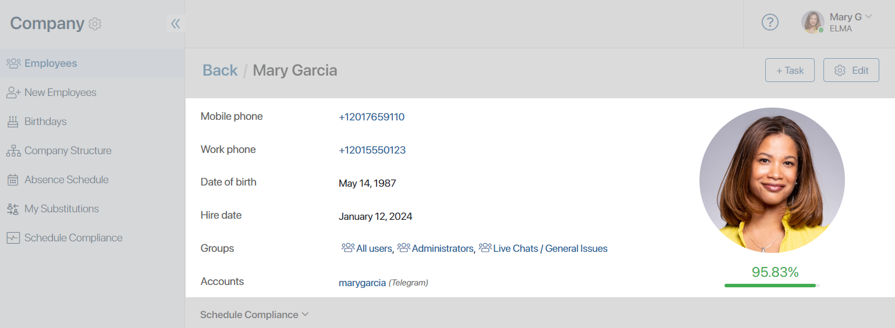
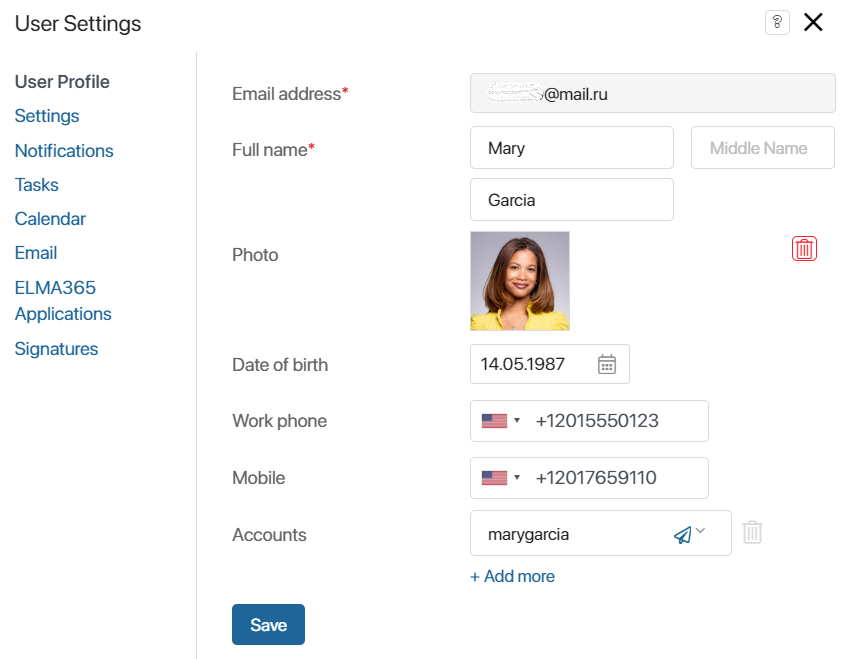
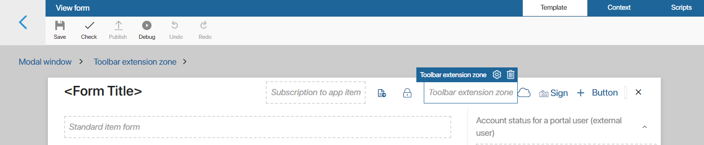
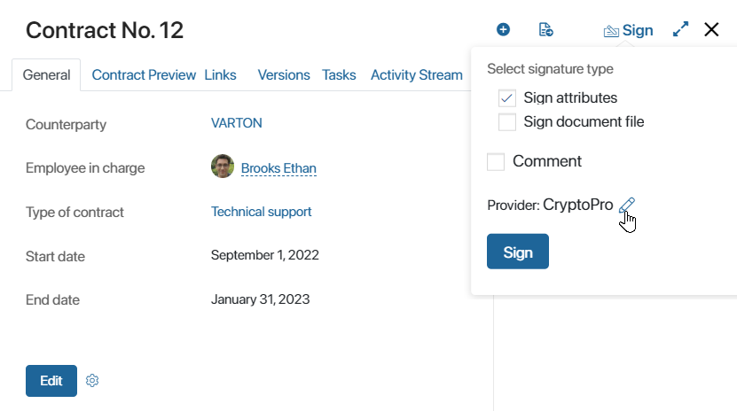

When creating a widget in a module, you can select an extension zone that matches its purpose. An extension zone can define:
- The place in the system interface where the content of the new widget will be displayed.
- An activity in the system that will execute the script of your widget.
- An activity that can be performed with the help of the widget you are creating.
We will look more closely at the extension zones available in the widget creation settings:
- User extension zone group. Select a zone of this group if the widget you are creating will display information about employees. The content of your widget will replace the information the user sees in the selected default zone:
- Popover with brief information.

- User profile.

- User profile settings. To save changes in this zone, add a call to the save() method in the widget script. This method can be applied to a field with the Users type or an item in the Employees directory, depending on which data changes are configured in the widget. If you want to display a message that the data was saved successfully, set the
isSavedSuccessfullyvariable totrue.

- Toolbar extension zone group > Toolbar extension zone. The widget you are creating will be displayed by default on the top panel of the app view form in the Toolbar extension zone widget. For example, in this way, you can display additional buttons on the app form. Read more about it in Toolbar extension zone.
 - Hierarchical structure > Structure item menu. The content of the widget you are creating will be displayed where the Hierarchical structure widget is placed and will automatically replace the information displayed by default.
- Main > Root component. The widget you are creating is initialized and its script will be executed at system boot. In the widget script, add async function onInit () and in this function add a call to the method to be executed. For example, you can set metrics for page traffic to the system by tracking URL changes in the script.
начало внимание
Using the Global constant prevents further export of the module. If Global is used in a widget script, a module with this widget cannot be exported.
конец внимание
- Sign app item > Sign app item on the view form. Using the widget you are creating, you can add a new provider to sign documents in the Sign app item widget window.
 - File preview > Preview page. The widget you are creating will allow viewing and editing documents uploaded via the viewer in the BRIX interface. By default, the widget is added to the OnlyOffice module. If another viewer is connected, create a widget with this extension in the integration module. Please note, that this widget can be kept empty in the interface designer. For an example of creating a module with such a widget, see Custom file viewing and editing module.
- App items list > Toolbar extension zone. The widget you are creating will be displayed on the top panel of the app page in the Toolbar extension zone widget.
Was this helpful?
Found a typo? Select it and press Ctrl+Enter to send us feedback